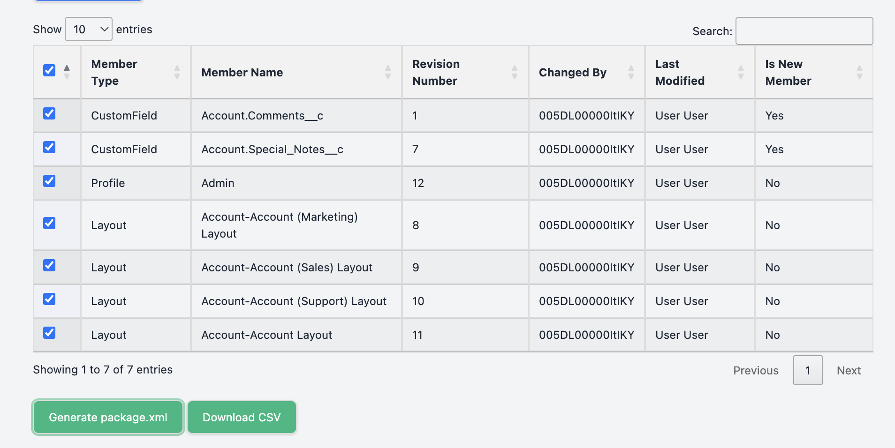
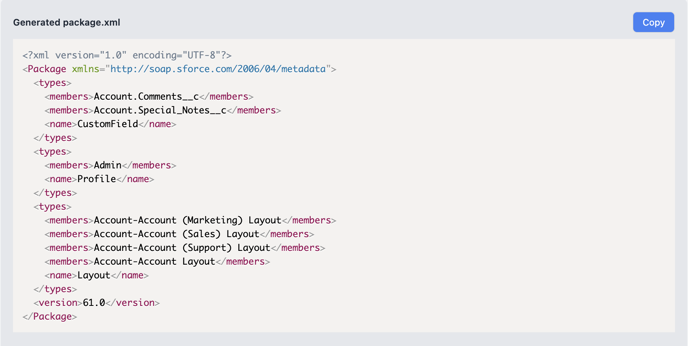
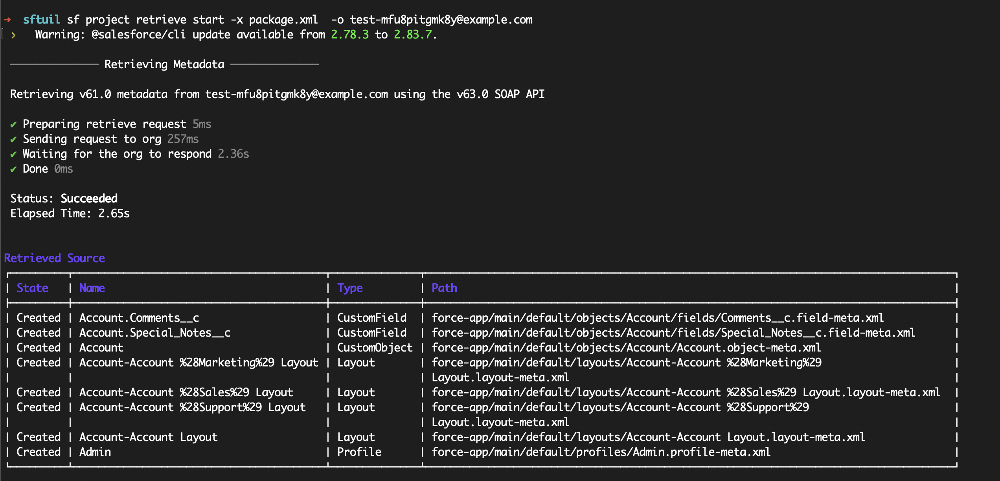
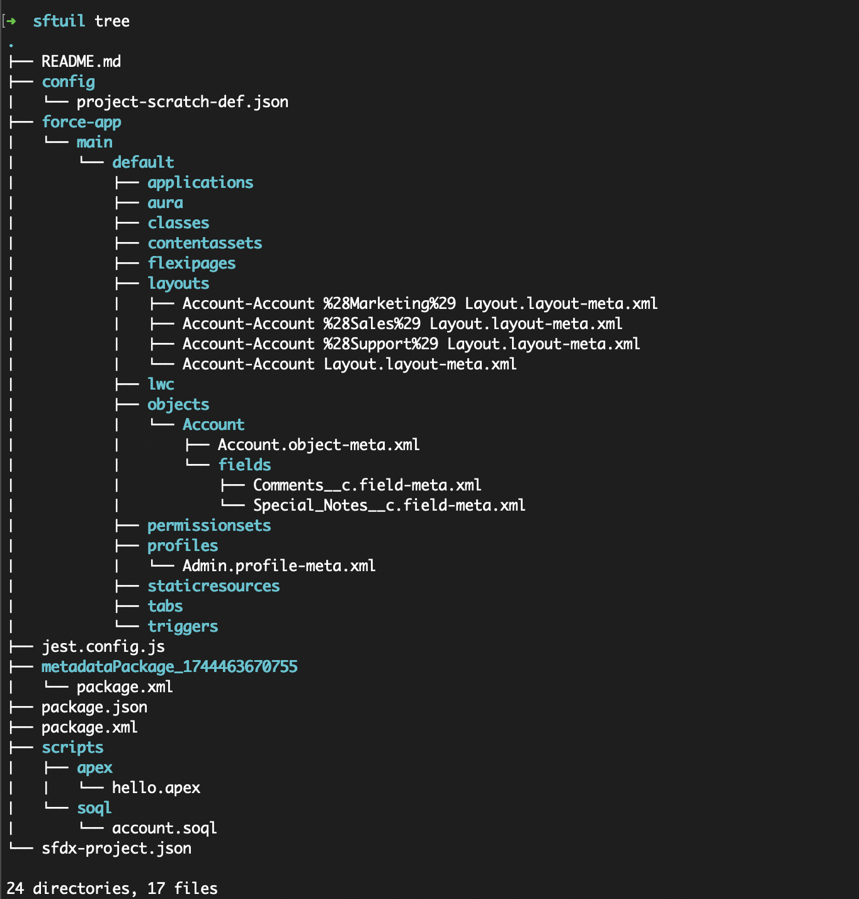

SF Utils Chrome Extension
A powerful tool for Salesforce developers to execute SOQL queries, track metadata changes, run anonymous Apex, and make REST API calls with ease.
Get StartedFeatures
SOQL Query Execution
Run SOQL queries with autocomplete suggestions and view results in interactive DataTables with CSV export.
Change Tracking
Track metadata changes using the Tooling API and generate package.xml files for deployment.
Anonymous Apex Execution
Execute anonymous Apex code directly from the extension and view the results in JSON format.
REST API Calls
Make REST API calls to Salesforce endpoints and view responses in a structured format.
See It in Action

How to Use
Follow these steps to get started with the SF Utils Chrome Extension:
🔹 Step 1: Install the Extension
Install the SF Utils Chrome Extension from the Chrome Web Store:
Install SF Utils🔹 Step 2: Log in to Salesforce
Open the extension while logged into a Salesforce org in Classic mode.
🔹 Step 3: Run a SOQL Query
Navigate to the "SOQL Query" tab, select a predefined query or enter your own, and click "Execute Query" to view the results in a DataTable.
🔹 Step 4: Track Metadata Changes
Go to the "Change Tracking" tab, click "Fetch Changes" to retrieve metadata changes, select the changes you want, and generate a `package.xml` file. This will work for Sandboxes and Scratch orgs where Change Tracking is enabled. Not on Production!
Then run this command in your sfdx project:
sf project retrieve start -x package.xml -o username
Sample Session Screens
   Commit the changes we got into git via Pull Request to trigger the pipeline
🔹 Step 5: Execute Apex or Make REST Calls
Use the "Anonymous Apex Code" tab to run Apex code, or the "REST" tab to make API calls to Salesforce endpoints.